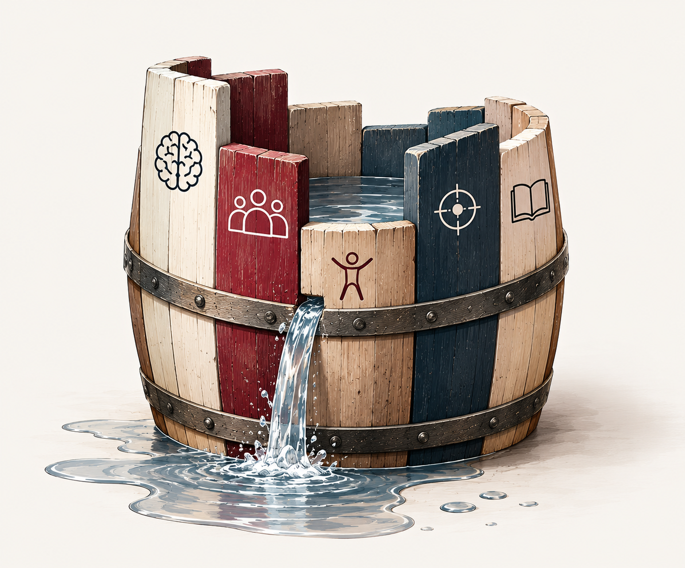

01 /
Наглядный профиль готовности
Приложение автоматически рассчитывает показатели по пяти направлениям и формирует график. Сразу видно, какие компоненты сформированы достаточно, а какие требуют внимания.
Готовая система для педагогов, психологов, логопедов, дефектологов и специалистов детских центров.
Научитесь проводить комплексную диагностику школьной готовности, выявлять трудности ребёнка и формировать профессиональное заключение с индивидуальными рекомендациями.
Всё необходимое уже включено: видеоинструкции, методическое руководство, диагностические бланки, компьютерное приложение и развивающие пособия.
ПОЛУЧИТЬ ДОСТУПРебёнок может читать и считать, но испытывать трудности с вниманием, саморегуляцией и общением. Поэтому школьную готовность важно оценивать комплексно.

Учебная мотивация, эмоциональная зрелость, саморегуляция и произвольность поведения.
Общение со взрослыми и сверстниками, понимание правил и взаимодействие в коллективе.
Внимание, память, программирование и контроль действий, координация и пространственные функции.
Функциональная зрелость организма и способность адаптироваться к школьным нагрузкам.
Предпосылки освоения чтения, письма и математики.
Комплексная диагностика помогает увидеть сильные стороны ребёнка, выявить трудности и определить направления дальнейшей работы.
От первого задания до готового заключения — по понятному алгоритму.
Откройте методическое руководство и диагностические бланки. Все инструкции, задания и критерии оценки уже подготовлены.
Проведите диагностические пробы по пяти направлениям школьной готовности. Фиксируйте результаты и наблюдения в диагностическом бланке. Обследование занимает около часа или немного больше.
Откройте компьютерное приложение. Для каждой пробы выберите оценку по готовым критериям и перенесите необходимые данные из диагностического бланка.
Приложение самостоятельно рассчитает результаты, сформирует профиль школьной готовности и подготовит PDF-заключение с индивидуальными рекомендациями.
Объясните родителям сильные стороны ребёнка, выявленные трудности и направления подготовки к школе. Консультация проводится отдельно от обследования.
ВЫ ПРОВОДИТЕ ДИАГНОСТИКУ — ПРИЛОЖЕНИЕ РАССЧИТЫВАЕТ РЕЗУЛЬТАТЫ И ФОРМИРУЕТ ЗАКЛЮЧЕНИЕ.
Специалист проводит обследование, вносит результаты в компьютерное приложение и получает готовый PDF-документ с профилем школьной готовности, анализом результатов и индивидуальными рекомендациями.
Приложение автоматически рассчитывает показатели по пяти направлениям и формирует график. Сразу видно, какие компоненты сформированы достаточно, а какие требуют внимания.
В заключении отражаются сильные стороны ребёнка и области, требующие дополнительной работы. Это основа для обсуждения результатов с родителями.
На основании результатов приложение формирует приоритетные направления развития и конкретные рекомендации для дальнейшей работы.
ВЫ ПРОВОДИТЕ ДИАГНОСТИКУ — ПРИЛОЖЕНИЕ ФОРМИРУЕТ ЗАКЛЮЧЕНИЕ.
От проведения диагностических проб до готового заключения и рекомендаций родителям.
Пошаговый разбор диагностических проб: как проводить обследование, на что обращать внимание и как оценивать результаты.
Описание проб, инструкции по проведению и критерии оценки для каждого задания.
Готовые материалы для фиксации ответов ребёнка, результатов наблюдения и комментариев специалиста.
Выбор оценок по готовым критериям, автоматический расчёт показателей и формирование PDF-заключения.
Изображения и задания, необходимые для проведения обследования ребёнка.
Дополнительные материалы для организации работы по развитию компонентов школьной готовности.
ОДНА СИСТЕМА — ОТ ПЕРВОЙ ПРОБЫ ДО ИНДИВИДУАЛЬНЫХ РЕКОМЕНДАЦИЙ.
ДЛЯ СПЕЦИАЛИСТОВ
Для специалистов, которые работают с детьми 5,5–7 лет и хотят оценивать готовность к школе комплексно, а не только по уровню знаний.
Выявлять сильные и слабые стороны школьной готовности, определять направления дальнейшей работы и давать родителям обоснованные рекомендации.
Понимать индивидуальные особенности ребёнка, прогнозировать возможные трудности и выстраивать подготовку с учётом результатов диагностики.
Оценивать разные компоненты школьной готовности и учитывать их при планировании коррекционно-развивающих занятий.
Внедрить комплексную диагностику как отдельную услугу, проводить входное обследование и формировать индивидуальные образовательные маршруты.
НЕ ПРОСТО ОЦЕНИТЬ ГОТОВНОСТЬ К ШКОЛЕ, А ПОНЯТЬ, НАД ЧЕМ РАБОТАТЬ ДАЛЬШЕ.
ОБУЧЕНИЕ И ДОСТУП
Изучайте диагностические пробы в удобное время и возвращайтесь к нужным урокам.
Видеоуроки и материалы доступны на платформе в течение 3 месяцев после оплаты.
Скачайте приложение на компьютер и используйте без ограничения срока, даже после завершения обучения.
Методическое руководство, диагностические бланки, материалы для обследования и развивающие пособия.